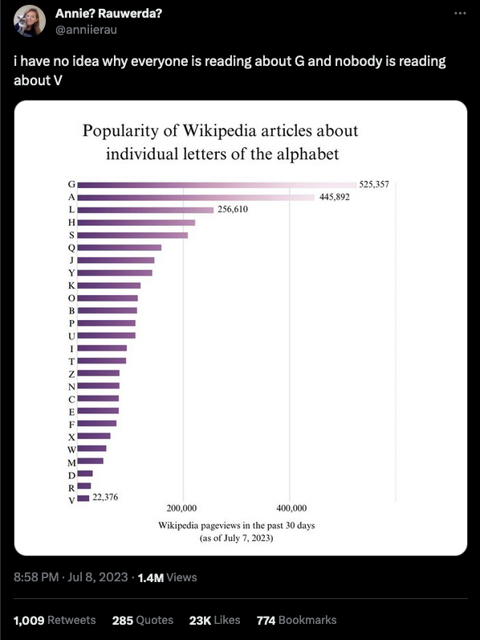
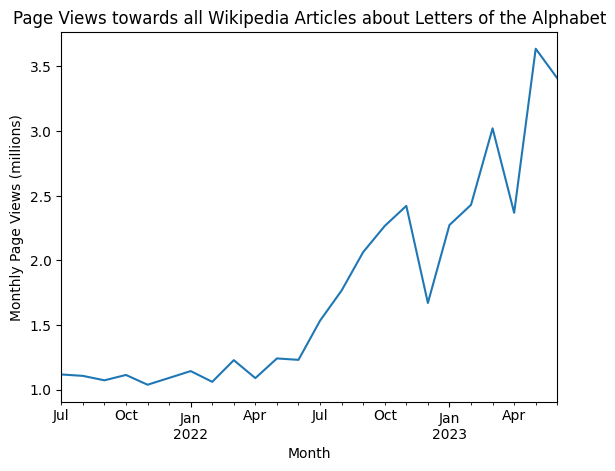
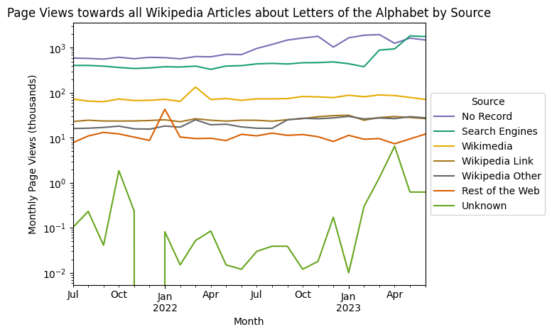
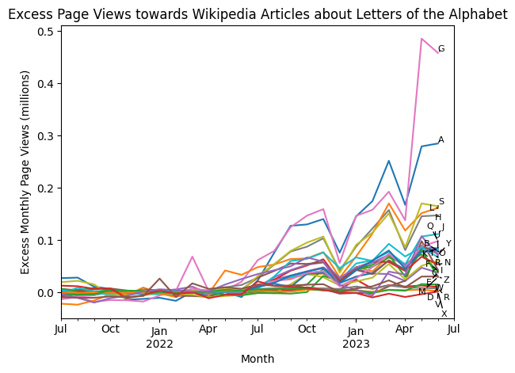
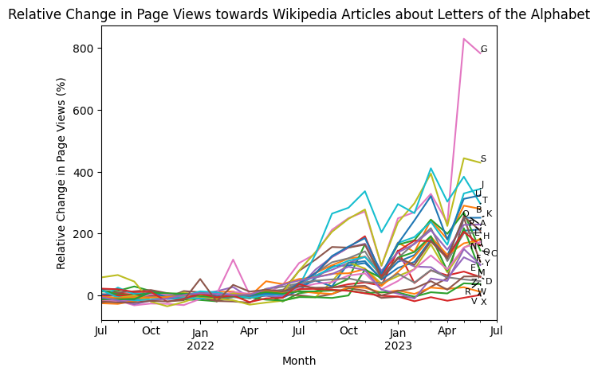
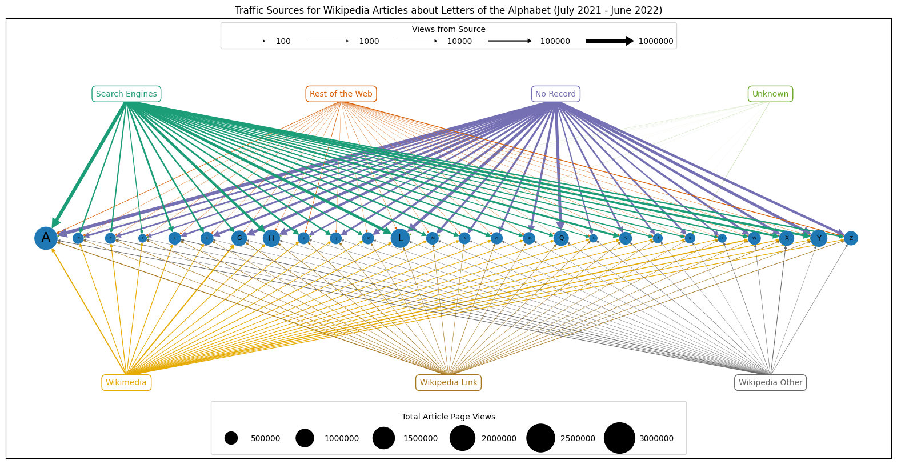
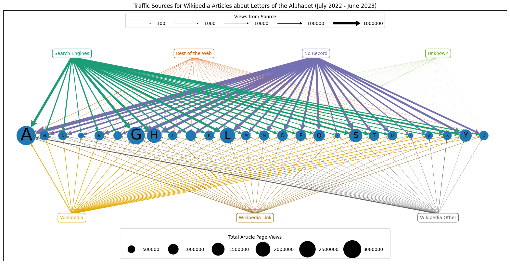
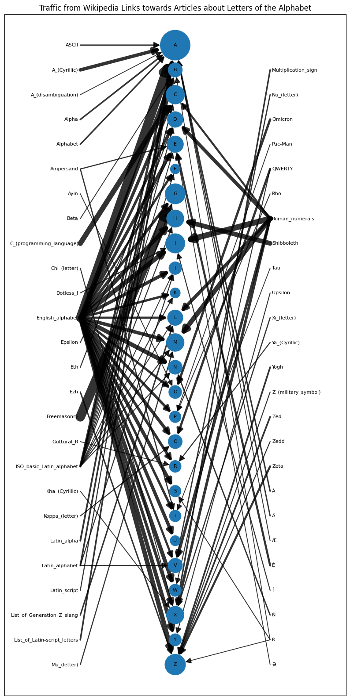

Inspired by this tweet, I took a look at the traffic patterns towards English Wikipedia articles about letters of the alphabet.
Some strange, as yet unexplained, patterns observed… I welcome any suggested explanations!
Data comes from the Wikipedia clickstream dataset. This is used to understand where page views come from. Some more detail on the external sources and higher granularity would be nice but unfortunately that is not available. Strictly speaking not 100% of an article’s page views are included here due to an edge weight threshold (see details in link), but it’s close enough.

Quick primer on network data
The clickstream data for each month forms a network. Each entry represents an ‘edge’ in the network, detailing where traffic comes from (the source), where it goes to (the target), and how many times it has been visited (the weight / “n”). The source and target are both ‘nodes’ in the network. The source is the page that a user was on before they navigasted to the target page (e.g. through a link on the source page). The weight is the number of times in a month that all users traversed from a specific source page to a specifc target page.
This network is directed (meaning each edge has a direction, from source to target), and weighted (meaning each edge has a weight, the number of times that edge was traversed).
Most of the entries in the clickstream data represent the number of times in one month that users have clicked a link on some source article towards some target article. However there is also data on traffic from sources external to Wikipedia which we make use of. See the link above for more details.
Downloading & reading clickstream data
First run of this can take a little while, but data is saved for future speedier use.
# import functions from wikiletters.pyfrom wikiletters import*fp =''# enter path to folder with clickstream data heresavepath ='data'# enter path to folder to save output to herestartm ='2021-07-01'endm ='2023-06-01'months = pd.date_range(startm, endm, freq='MS')split = months[len(months)//2] # get point to split data in half for comparison# check if data has already been downloaded and processedif (os.path.exists('%s/az_clickstream_%s_%s.csv'%(savepath, startm , endm))& os.path.exists('%s/agg_clickstream_%s_%s.csv'%(savepath, startm , endm))): dft = pd.read_csv('%s/az_clickstream_%s_%s.csv'%(savepath, startm , endm), index_col=0, parse_dates=['month']) dfg = pd.read_csv('%s/agg_clickstream_%s_%s.csv'%(savepath, startm , endm), index_col=0, parse_dates=[0])else: # if not, download, process, and save data download_clickstream(startm, endm, fp) dft, dfg = get_abc_clickstream(startm, endm, fp) dft.to_csv('%s/az_clickstream_%s_%s.csv'%(savepath, startm , endm)) dfg.to_csv('%s/agg_clickstream_%s_%s.csv'%(savepath, startm , endm))display(dft.head()) # all edges to letters of the alphabetdisplay(dfg.head()) # aggregated data across all articles for different sources
source
target
type
n
type2
month
386
other-search
A
external
83284
Search Engines
2021-07-01
404
other-empty
A
external
64369
No Record
2021-07-01
444
other-internal
A
external
6314
Wikimedia
2021-07-01
388
other-external
A
external
1278
Rest of the Web
2021-07-01
442
Main_Page
A
other
1117
Wikipedia Other
2021-07-01
Search Engines
Rest of the Web
No Record
Unknown
Wikimedia
Wikipedia Link
Wikipedia Other
2021-07-01
3079018876
66824340
1436272303
149779
125543119
2255489317
65494170
2021-08-01
3053078620
69360537
1421374549
130745
126638318
2249276871
63354813
2021-09-01
2954325919
66275924
1317654573
193580
119765805
2045986483
57496100
2021-10-01
3018637196
68711456
1316391400
349130
121836833
2080902700
58488064
2021-11-01
2856159667
67904845
1254032762
336090
115326252
1921539436
52515893
Aggregating data in various ways
The dataframes created below summarise different aspects of the data: - agg_df: total pageviews from all sources to each letter over full period - agg_m_df: total pageviews from each source to each letter (Wikipedia source articles disaggregated) over full period - agg_mt_df: total pageviews from all sources to each letter per month - agg_t_df: total pageviews from each source to each letter (Wikipedia source articles aggregated) over full period - agg_tm_df: total pageviews from each source to each letter (Wikipedia source articles aggregated) per month
agg_df = dft.groupby('target')['n'].sum().sort_values(ascending=False).reset_index()agg_m_df = dft.groupby(['target', 'source', 'type'])['n'].sum().sort_values(ascending=False).reset_index()agg_mt_df = dft.groupby(['target', 'month'])['n'].sum().sort_values(ascending=False).reset_index()agg_t_df = dft.groupby(['target', 'type2'])['n'].sum().sort_values(ascending=False).reset_index()agg_tm_df = dft.groupby(['target', 'type2', 'month'])['n'].sum().sort_values(ascending=False).reset_index()display(agg_df.head()) # total pageviews from all sourcesdisplay(agg_m_df.head()) # total pageviews from each source (articles disaggregated)display(agg_mt_df.head()) # total pageviews from each monthdisplay(agg_t_df.head()) # total pageviews from each source (articles aggregated)display(agg_tm_df.head()) # total pageviews from each source each month (articles aggregated)
target
n
0
A
5063079
1
G
3604129
2
L
3259600
3
H
2858547
4
Y
2220332
target
source
type
n
0
A
other-empty
external
2923877
1
G
other-empty
external
2255170
2
L
other-empty
external
1775921
3
A
other-search
external
1719295
4
H
other-empty
external
1626018
target
month
n
0
G
2023-05-01
543458
1
G
2023-06-01
516054
2
A
2023-06-01
417423
3
A
2023-05-01
411836
4
A
2023-03-01
384302
target
type2
n
0
A
No Record
2923877
1
G
No Record
2255170
2
L
No Record
1775921
3
A
Search Engines
1719295
4
H
No Record
1626018
target
type2
month
n
0
G
Search Engines
2023-05-01
359876
1
G
Search Engines
2023-06-01
348979
2
A
No Record
2023-03-01
245137
3
A
No Record
2023-02-01
241168
4
A
Search Engines
2023-06-01
203479
Investigating page views over time
Total page views towards the letter articles start increasing dramatically around June 2022, tripling in volume in 1 year!
tpd = dft.groupby('month')['n'].sum()/1000000# group & convert to millionstpd.plot()plt.title('Page Views towards all Wikipedia Articles about Letters of the Alphabet')plt.xlabel('Month')plt.ylabel('Monthly Page Views (millions)')plt.savefig('figures/total_pageviews.png', dpi=300, bbox_inches='tight')plt.show()

Traffic sources
Sources with no recorded origin are primarily responsible for this increase in traffic, initially at least, with Search Engines also contributing significantly from Jan 2023.
# group, reshape, convert to thousands, sort cols by totalttpd = dft.groupby(['type2', 'month'])['n'].sum().unstack().T/1000ttpd = ttpd[ttpd.sum().sort_values(ascending=False).index].fillna(0)# specify colours for each source (used for consistency between plots)cmap = cm.Dark2(np.linspace(0, 1, 7))sources = ['Search Engines', 'Rest of the Web', 'No Record', 'Unknown','Wikimedia', 'Wikipedia Link', 'Wikipedia Other']source_colours = {x: cmap[n] for n, x inenumerate(sources)}# plotfor source in ttpd.columns: ttpd[source].plot(color=source_colours[source])plt.title('Page Views towards all Wikipedia Articles about Letters of the Alphabet by Source')plt.xlabel('Month')plt.ylabel('Monthly Page Views (thousands)')plt.yscale('log')plt.legend(title='Source', bbox_to_anchor=(1, 0.75))plt.savefig('figures/pageview_sources.png', dpi=300, bbox_inches='tight')plt.show()

Page view targets
Different letters have different baseline page views. Lets look at the increase in page views above this baseline (calculated from first year monthly average).
G, A, S, L, and H have the largest increases in page views, some letters have no notable increase at all.
There are some strange dips across all letters in December 2022 and April 2023. I’m not sure what could be responsible for this?
# get average per letter over first periodmean_y1 = agg_mt_df[agg_mt_df['month']<split].groupby('target')['n'].mean()# get excess views per letter per month, convert to millionsxpd = (dft.groupby(['target', 'month'])['n'].sum() - mean_y1 ).unstack().T/1000000# plotxpd.plot(legend=False)texts = []for k, v in xpd.iloc[-1].sort_values().to_dict().items(): # add letter labels texts.append(plt.text(xpd.index[-1], v, k, fontsize=8))plt.title('Excess Page Views towards Wikipedia Articles about Letters of the Alphabet')plt.xlabel('Month')plt.ylabel('Excess Monthly Page Views (millions)')plt.xlim(xpd.index[0], pd.to_datetime(endm) + pd.DateOffset(months=1))# jitter the letter labelsadjust_text(texts, arrowprops=dict(arrowstyle="-"), avoid_self=False)plt.savefig('figures/az_excess_views.png', dpi=300, bbox_inches='tight')plt.show()

Considering pageviews relative to their first year average is a similar story. Page views for the letter G increased 800% over the course of the last year, most letters increased somewhat, but some not at all.
# get scaled views per letter per month, compared to first period averagerpd = (dft.groupby(['target', 'month'])['n'].sum() / mean_y1).unstack().T*100-100# plotrpd.plot(legend=False)texts=[]for k, v in rpd.iloc[-1].sort_values().to_dict().items(): # add letter labels texts.append(plt.text(rpd.index[-1], v, k, fontsize=8))plt.title('Relative Change in Page Views towards Wikipedia Articles about Letters of the Alphabet')plt.xlabel('Month')plt.ylabel('Relative Change in Page Views (%)')plt.xlim(rpd.index[0], pd.to_datetime(endm) + pd.DateOffset(months=1))# jitter the letter labelsadjust_text(texts, arrowprops=dict(arrowstyle="-"), avoid_self=False)plt.savefig('figures/az_relative_views.png', dpi=300, bbox_inches='tight')plt.show()

Visualising the traffic by source and target
Need to create a clean edgelist for where clicks come from, which article they go to, and how many clicks there are. Do this for year 1 of data and year 2 of data.
Plotting this data, we see the large increase in page views in year 2 vs year 1, how this is primarily driven by ‘No Record’ and ‘Search Engines’, plus more detail on how this varies by letter.
# plot clickstream data for each letterplot_az_fig(el_y1, ' (July 2021 - June 2022)')plot_az_fig(el_y2, ' (July 2022 - June 2023)')


More edge details
Comparing traffic by source in year 1 vs year 2.
Finding the edges with the largest increase in traffic.
Within Wikipedia, find the edges with the highest traffic (links in articles clicked the most.)
# 1. absolute and relative change in views by source, y2 vs y1display(el_y2.groupby('source')['weight'].sum() - el_y1.groupby('source')['weight'].sum())display(el_y2.groupby('source')['weight'].sum() / el_y1.groupby('source')['weight'].sum())
source
No Record 10672221
Rest of the Web -31901
Search Engines 4485797
Unknown 6951
Wikimedia 66417
Wikipedia Link 39974
Wikipedia Other 90261
Name: weight, dtype: int64
source
No Record 2.439656
Rest of the Web 0.796787
Search Engines 1.985913
Unknown 3.543359
Wikimedia 1.074234
Wikipedia Link 1.137810
Wikipedia Other 1.416229
Name: weight, dtype: float64
# 2. show edges with the largest increase in views y2 vs y1display((el_y2.groupby(['source', 'target'])['weight'].sum().sub( el_y1.groupby(['source', 'target'])['weight'].sum(), fill_value=0).sort_values(ascending=False)).head())
source target
No Record A 1469879.0
G 1346226.0
Search Engines G 903355.0
No Record S 894121.0
H 845744.0
Name: weight, dtype: float64
# 3. show top wikipedia article sources in each periodsdfl = dft[dft['type'] =='link']display(dfl.groupby(['source', 'target'])['n'].sum().sort_values(ascending=False).head().reset_index())display(dfl[dfl['month']<split].groupby(['source', 'target'])['n'].sum().sort_values(ascending=False).head().reset_index())display(dfl[dfl['month']>=split].groupby(['source', 'target'])['n'].sum().sort_values(ascending=False).head().reset_index())
source
target
n
0
Freemasonry
G
15385
1
English_alphabet
A
14308
2
Roman_numerals
I
9236
3
C_(programming_language)
C
8414
4
Roman_numerals
M
7621
source
target
n
0
English_alphabet
A
7421
1
Freemasonry
G
7044
2
Roman_numerals
I
4717
3
C_(programming_language)
C
4347
4
Shibboleth
H
4038
source
target
n
0
Freemasonry
G
8341
1
English_alphabet
A
6887
2
English_alphabet
I
5069
3
English_alphabet
N
4610
4
Roman_numerals
I
4519
Internal Wikipedia link plot
A slightly simpler / uglier / less informative version of the above plot, restricted to links between Wikipedia articles.
The alphabet page features strongly, as well as Roman numerals, and the Freemasonry -> G link. Probably a conspiracy.
# considering the top 100 links from Wikipedia articles to the letter articles:elw = dfl.rename(columns={'n':'weight'}).groupby(['source', 'target'])['weight'].sum().sort_values(ascending=False).reset_index().iloc[:100]az_wikilinks_fig(elw)

Comparison with wider patterns
The increase in traffic towards letter articles is not reflected in wider access patterns towards all articles. What other (groups of) articles might be affected? Why? And where is this traffic really coming from?
# compare page views from different sources across all of English Wikipediagp = dfg/1000000000gp = gp[gp.sum().sort_values(ascending=False).index] # sort plots & legendfor source in gp.columns: # plot source, consistent colours gp[source].plot(color=source_colours[source])plt.title('Page Views towards all English Wikipedia Pages by Source')plt.ylabel('Page Views (billions)')plt.xlabel('Month')plt.legend(title='Source', bbox_to_anchor=(1, 0.75))plt.savefig('figures/allwiki_pageview_sources.png', dpi=300, bbox_inches='tight')plt.show()